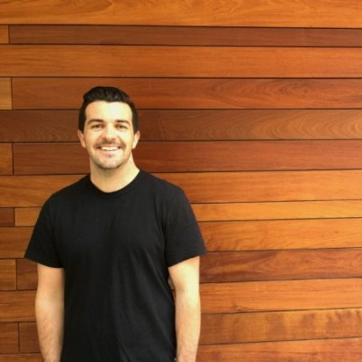
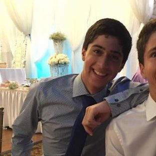

TEAM MEMBERS

GEORGE LACHOW
Team Lead

ALEX KHOURY
Simulation, Planning

JASON QUACH
Perception
IARC Quadcoptor
In the first part of Mission 7 of IARC, Mission 7a, participants must develop a fully autonomous UAV to track randomly moving objects and interact physically with them in order to guide them across the field to a designated location while avoiding dynamic obsta- cles. The indoor area consists of a field that is 20x20 meters, with grid lines every meter. The field is populated with 14 Roombas, 4 of which are obstacles with up to 2 meter vertical poles while the remaining 10 move in a semi-random pattern and have paddles on top which allow interaction.
The problem has 3 key main challenges, localizing the aircraft, detection and tracking of obstacles and targets, and optimized planning and control in order to complete the mission within a time constraint. Because of the clear problem definitions, we split up our solution into 3 main areas. The first is Self-Estimation, localizes the aircraft’s absolute position relative to the grid. The next area of focus is Perception, identification and tracking of objects, along with determining the objects position relative to the aircraft. The third focus is Planning, which generates high-level trajectory commands to take to optimize herding.
The roombas have very distinct colored features, with red and green paddles, therefore a threshold is performed over a range in the HSV colors-space to identify an agent of interest. This was preceded by a Gaussian Blur in order to remove small perturbations within the frame. Its pixel coordinates are than calculated by locating the center of its contour and a conversion is performed.
Grid detection is made possible through a few steps. First, we apply a white threshold to highlight the grid lines. Then we apply a canny edge detector to identify the edges of the lines. Next, a hough line transform is done in order to find the location and angles of the grid lines. Since we identified the location and angle of the grid lines from the hough transform, we can exploit the hough space. Using this, we can localize ourselves relative to our location on the grid by counting how many grid lines we traversed, both vertically and horizontally.
Gazebo allows numerous customizations to be done to allow incredible flexibility in robot simulation. It also supports generation of measurements from a multitude of sensors, allowing customization for additive noise. Gazebo provides extensive documentation and examples of how to implement and simulate various situations. They provide direct access to their API with the use of plugins, allowing for development of control software for robots, sensors and even the environment.
Our simulation is an amalgamation of various packages, working seemlessly to deliver an aesthetically pleasing, highly functional, easily customizable, simulation environment for ROS software development. It integrates the Ardupilot SITL plugin, MAVROS, MAVLink/MAVProxy, ROS/GAZEBO, and many other packages, including our own software stack.
Team Lead
Simulation, Planning
Perception
Contact us and we'll get back to you within 24 hours.
La Jolla, CA
+1 760 828 8894
georgelachow@gmail.com